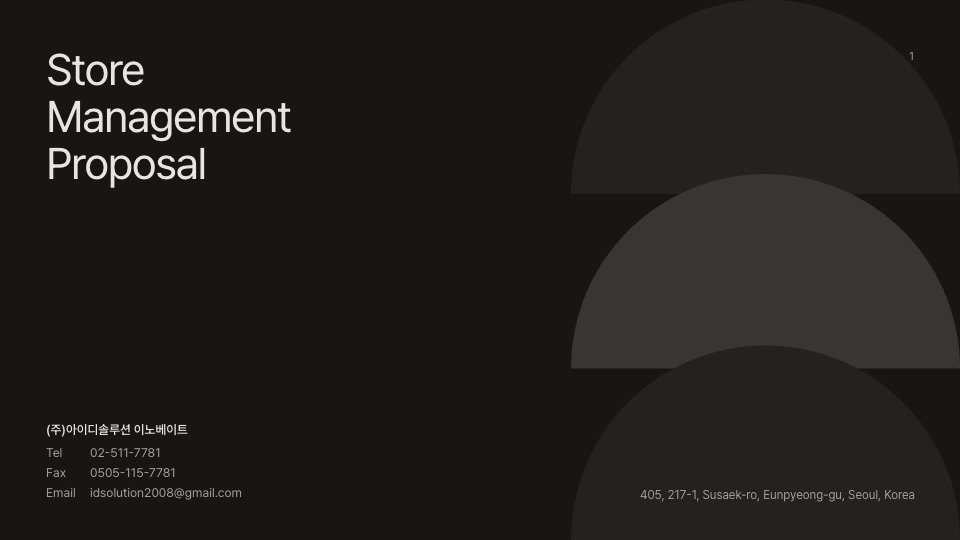
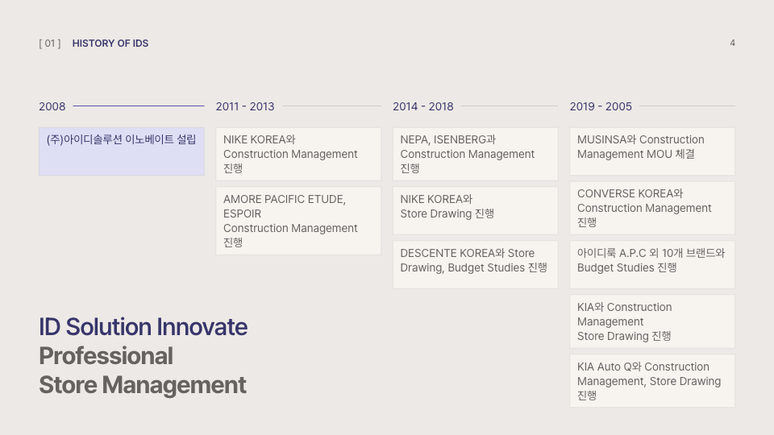
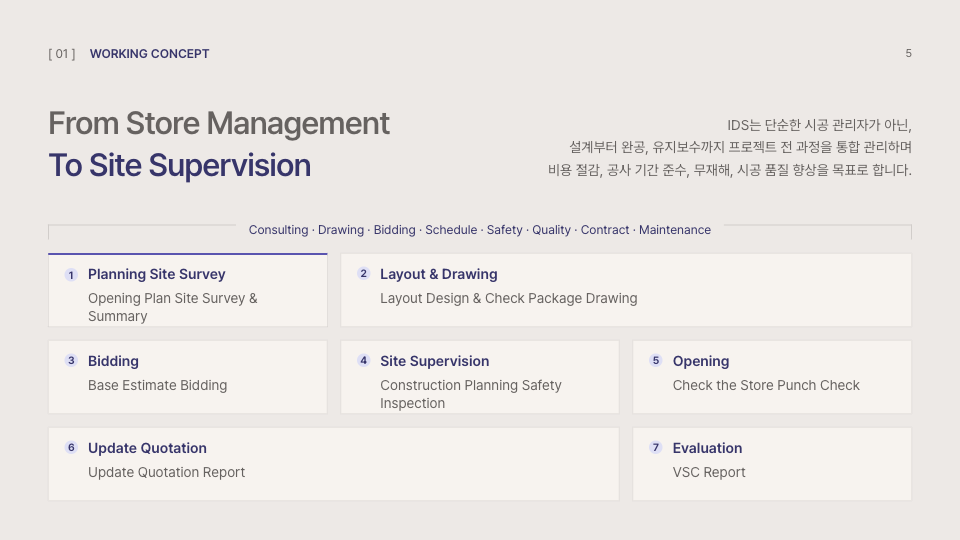
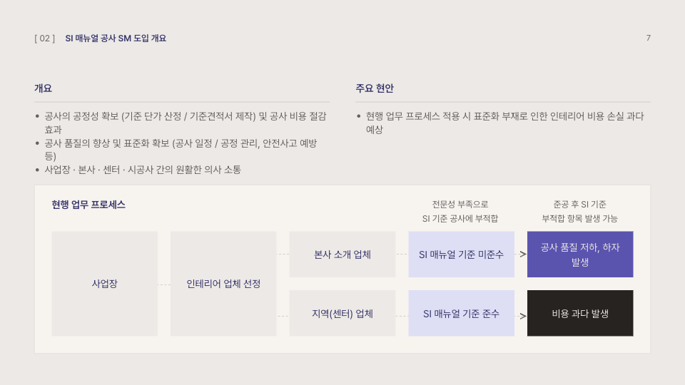
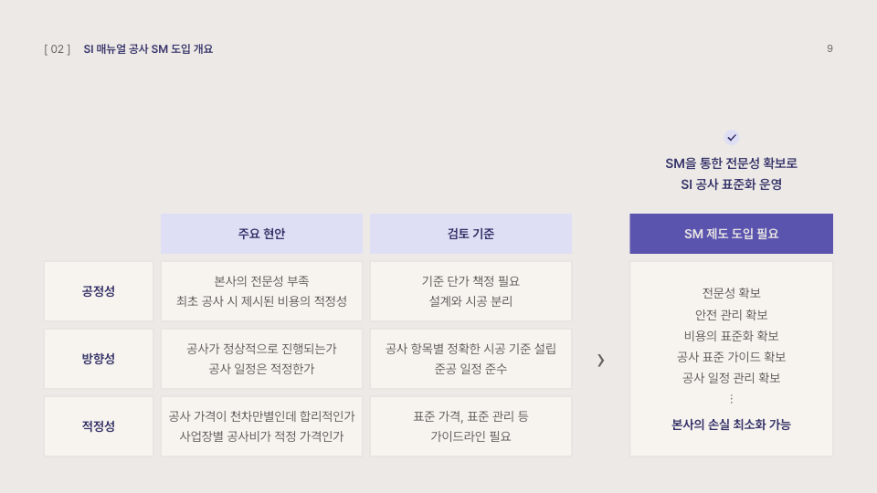
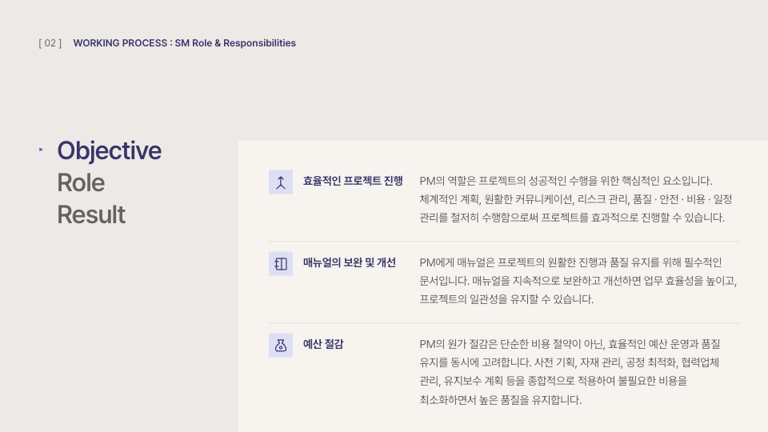

Store Management Proposal
좌상단 3행 영문 표제와 우측에 겹친 3개의 반원, 하단 연락처 · 좌상단 3행 영문 표제와 우측에 겹친 3개의 반원, 하단 연락처

HISTORY OF IDS
네 시기의 가로 연혁과 1·2·3·5개 이력 카드, 왼쪽 아래 3행 슬로건 · 네 시기의 가로 연혁과 1·2·3·5개 이력 카드, 왼쪽 아래 3행 슬로건

WORKING CONCEPT
상단 좌우 제목·설명과 브래킷 아래 7개 업무, 3열에서 2·6번 항목이 두 칸 병합 · 상단 좌우 제목·설명과 브래킷 아래 7개 업무, 3열에서 2·6번 항목이 두 칸 병합

SI 매뉴얼 공사 SM 도입 개요 — 현행 업무 프로세스
위쪽 2열 개요·현안, 아래쪽 5단계에서 두 경로로 분기되는 현행 프로세스 · 위쪽 2열 개요·현안, 아래쪽 5단계에서 두 경로로 분기되는 현행 프로세스

SI 매뉴얼 공사 SM 도입 개요 — SM 제도 도입 필요
왼쪽 3행 현안·검토 기준 매트릭스와 오른쪽 SM 제도 결론 패널, 상단 체크 메시지 · 왼쪽 3행 현안·검토 기준 매트릭스와 오른쪽 SM 제도 결론 패널, 상단 체크 메시지

WORKING PROCESS — Objective
L자 배경의 왼쪽 Objective·Role·Result 내비게이션과 오른쪽 아래 3행 아이콘·제목·본문 · L자 배경의 왼쪽 Objective·Role·Result 내비게이션과 오른쪽 아래 3행 아이콘·제목·본문